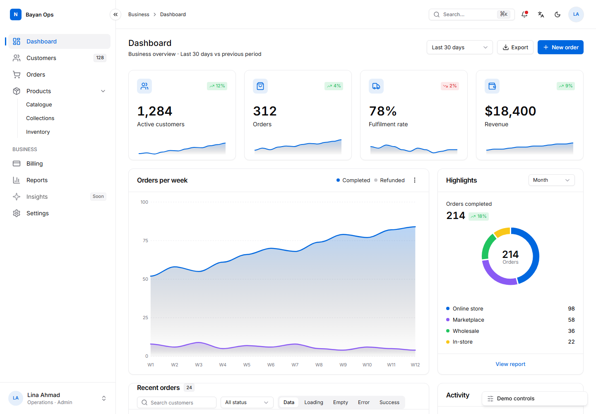
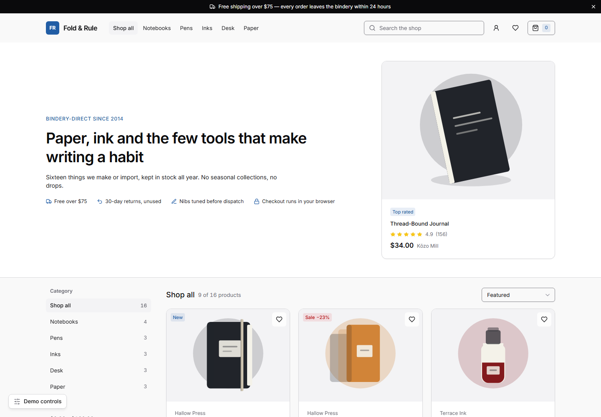
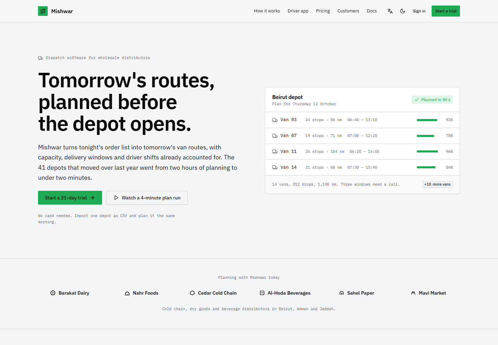
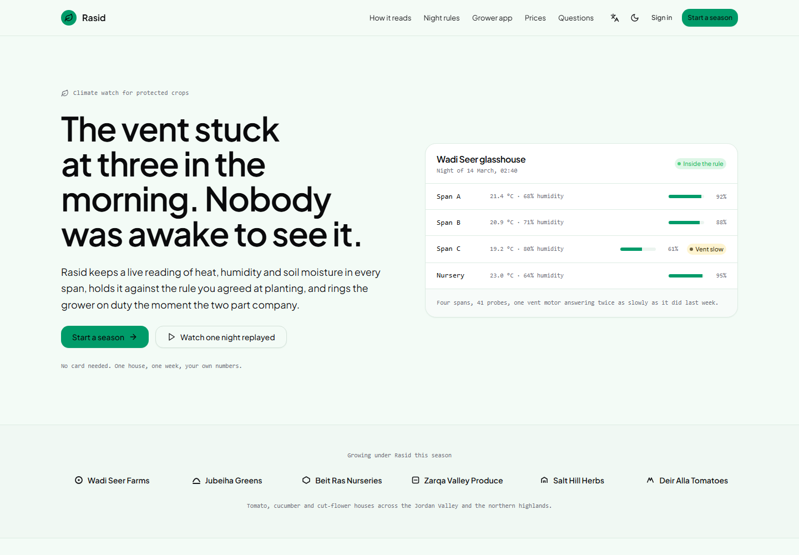

You can tell which screens an agent built.
The purple-to-blue gradient. The Sparkles icon. Three identical cards under a hero that says nothing. Every agent reaches for the same defaults, so every product ends up wearing the same face.
jbelly-ui is a UI system your agent installs: exact colour and spacing tokens, 25 component recipes written as literal class strings, a builder that turns a small JSON spec into a whole page, and a script that exits non-zero when a screen drifts back to those defaults. That script runs on your code too — one file, stock Python, nothing to install.
npx skills add JBelly-tech/jbelly-ui -a claude-code
MIT · no account, no API key, no telemetry · works with Claude Code, Cursor, Codex, Copilot, Gemini CLI and anything else that reads skills

The demo, as it ships — and opening it keeps whatever you picked
above: the personality, dark mode, the language. Everything in it works: collapse the sidebar,
press ⌘K, sort a column. This capture is taken from that file by
scripts/capture_showcase.py, so it cannot fall behind the code.
Every colour on this page came from the skill
The rail at the top writes one class on this document and changes nothing else. The typeface, the corner radius, the surface tint and the brand colour all move together, because they are tokens rather than values typed into components. A re-brand is one file, not a sweep through the markup.
The same six presets ship inside the skill, and the agent has to choose one and
write it to design/personality.md before it writes any code — so two products do not
have to wear the same face.
Four self-contained demos, one HTML file each. Everything in them works: sidebar collapse, ⌘K palette, table loading, empty and error states, drawer, column sort, notifications, and AR/EN with full RTL.
The storefront is a shop, not a screenshot
Browse the catalogue, filter by category and price, sort it, search it, open a quick view, pick a size and a finish, add to the cart, apply a promo code, remove a line and undo that, then go through a four-step checkout that validates every field. There is no API and no back end behind any of it: one HTML file that keeps its own state.
None of that is a promise. check_controls.py drives every button,
link, field and select in a real browser and fails on any control that produces no change at all
— no DOM mutation, no navigation, no focus move, no animation, no scroll. On this file that is
30 controls driven, 0 dead, and it runs in CI against all four demos.

Fold & Rule, a stationery shop. Same tokens as the dashboard above, same six presets, same checks — a different kind of screen, built out of the same recipes.
It is a script, not an opinion
Most design guidance is advice an agent can skip. This is eleven rules with an
exit code. preflight.py reads a file or a folder and fails when it finds one,
printing file:line so the fix is a single edit.
Two of the eleven allow two hits before failing, because a rule with no tolerance gets switched off. The other nine allow none. It bans the purple-to-blue gradient, not the colour purple — one of the six presets above has an electric-violet brand colour.
The same run checks structure and contrast: one h1, a skip link
wherever there is a nav, an accessible name on every icon-only button, and the WCAG ratio of
every colour role the markup actually paints text with — not only the pairs a stylesheet happens
to declare. On the shipped app shell that is 137 ratios across 16 scopes: every
preset, in light and in dark.
python skills/jbelly-ui/scripts/preflight.py ./src python skills/jbelly-ui/scripts/lint_tokens.py ./src
Clone the repository, or lift those two files out of it. Stock Python 3.9, no dependencies, no network. They work on any project, whether or not you use the rest of this.
A page costs a spec, not a conversation
The expensive part of agent-built UI is not the thinking. It is re-sending the whole context on every step while the model types out markup. So the markup is not modelled: a JSON spec goes in, a finished page comes out, and every field is asserted afterwards — a value that never reached the page exits non-zero instead of shipping quietly.
bytes of spec
assets/spec.example.json
bytes of page — 21× larger
scripts/build-screen.py
page shapes: app, landing, pricing
--kind on the builder
model tokens spent on markup
it is a Python script
python skills/jbelly-ui/scripts/build-screen.py spec.json out.html --kind landing python skills/jbelly-ui/scripts/verify_page.py out.html --variants ",#dark=1,#dir=rtl"


The second command renders the page headlessly in light, dark and RTL, collects console errors, runs the lint and the pre-flight, and — with Playwright installed — fails on horizontal overflow at 375 and 1440. Without Playwright it falls back to any Chrome, Chromium or Edge already on the machine and runs everything except the overflow check.
What one screen cost
Three briefs, each run in a workspace outside the repository with every other skill switched off. Each row links to the file the run wrote, with the counts exactly as the agent CLI reported them.
| Brief | Context tokens | Billed | Minutes | Tool calls | Record |
|---|---|---|---|---|---|
| Dashboard | 831,640 | 97,004 | 2.07 | 10 | run |
| Landing page | 1,321,657 | 132,137 | 7.21 | 13 | run |
| Pricing page | 4,906,916 | 182,638 | 9.28 | 41 | run |
A pricing page cost six times a dashboard, and that gap is the useful number. The dashboard was the one shape the builder knew, so a spec became the whole screen. Nothing filled the landing or pricing shape, so the model wrote every line by hand — which is exactly the cost this exists to remove. Both shapes have templates now, which should move those two rows a long way, and nothing here claims the improvement until the briefs have been run again.
One run each, one model, one agent, one machine. No repeats, so no variance: read the ordering as real and the precision as not. The method, the isolation, and the numbers this project has withdrawn because the harness that produced them was unfair, are all in COST.md.
Where it is weak
The cost figures are older than the tool
They were measured when the builder knew one page shape. The landing and pricing rows are the cost of a model writing that markup by hand. The dashboard figure is unaffected.
One run, one model, one agent
Everything outside this machine's single model family and single agent is untested. Twelve briefs exist in the repository; three have been measured.
Three generated shapes, not every shape
App screen, landing page, pricing page. Anything else is the model writing markup with the system's rules in front of it, which is better than nothing and costs what it costs.
The checks are a floor, not a review
They catch the defaults, the contrast failures and the structural faults. No script judges whether a screen is good, and this one does not pretend to.
It is web only. About 1019 KB installed across 43 files, and 53% of that is the four demo shells, which you can delete.
Install
Agents that read skills
Claude Code, Codex, Cursor, Copilot, Gemini CLI, Windsurf, Kiro, Roo Code, OpenCode, Amp, Goose and more.
npx skills add JBelly-tech/jbelly-ui -a claude-code
No Node? ./install.sh cursor on macOS and Linux, or
.\install.ps1 -Agent cursor on Windows, copies the folder into place.
Tools that read a rules file
Copy dist/AGENTS.md to your project root, or into the tool's
knowledge box.
Chat-only tools
Paste dist/jbelly-ui-prompt.md — about 5K tokens,
self-contained, with the tokens and a manual checklist. Both files are generated from the
skill, so they cannot drift from it.
Then ask for any UI: add a dashboard, build the settings page, restyle this table, review this screen. The skill triggers on UI work only.
Fork it, strip the name, ship it in something you charge for
MIT. No attribution required, no per-project licence, no account, and nothing here phones home. If your agent produces something bad with it, that is the result worth having: the issue template asks for the brief, the agent, the model and the verdict lines.